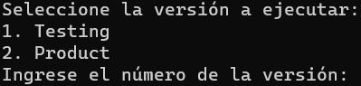
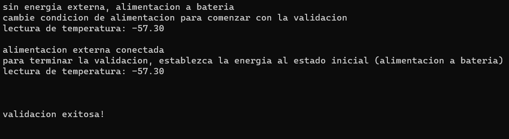
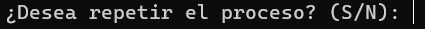

2. Grabación de Firmware
Esta herramienta te permitirá grabar un firmware en un gateway y te facilitará la elección entre dos versiones, la de "Testing" y la "Product" (producción). También te permite realizar este proceso de forma cíclica para llevar a cabo la validación y preparación en serie de varios dispositivos.
Ejecución del Script¶
Al iniciar el script, te solicitará ingresar el número de puerto a utilizar para la comunicación con el gateway. Para mas detalles sobre este proceso ver conectando adaptador USB.
Luego, te presentará la selección de la versión a cargar: "Testing" (1) o "Product" (2).
Una vez elegido, el script grabará el firmware en el dispositivo y abrirá un monitor de datos para que puedas verificar el funcionamiento.
Dentro del monitor de datos puedes:
- Reiniciar el programa: ctrl+T y luego ctrl+R.
- Detener el programa: ctrl+T y luego ctrl+P.
- Salir del monitor: ctrl+T y luego ctrl+X.

Diferencias entre las versiones¶
La versión "Testing" del firmware es especialmente verbosa y se utiliza para comprobar el funcionamiento correcto de todas las operaciones del gateway de forma detallada. Al comienzo ejecuta un bucle bloqueante que permite verificar los sensores de temperatura y energía. También posee credenciales de prueba que permiten efectuar conexiones aunque el gateway no se haya dado de alta aún. Se recomienda grabar este firmware en los casos que sea necesario hacer un diagnóstico y/o una validación. La versión "Product" es la que se debe usarse cuando el dispositivo esté en servicio. Posee un numero muy limitado de impresiones relacionadas a la conectividad. Aquí el bucle bloqueante se saltea, pasando directamente a la fase de conexión. Por lo tanto no sirve para verificar el funcionamiento de los sensores y el diagnóstico al cual se puede llegar es limitado.
Validación de los sensores (Testing)¶
La funciones se pueden dividir en dos partes: operaciones con sensores y operaciones de conectividad. Para validar los sensores, el programa entra en un bucle bloqueante que cada 5 segundos imprime la lectura del sensor de energía y el de temperatura. Para pasar a la fase de conexión es necesario validar exitosamente la fase de los sensores. A continuación se detallan los pasos a seguir.
Validación del Sensor de Temperatura¶
- Se realiza comparando el valor de temperatura impreso en cada ciclo de la verificación con la temperatura ambiente.
- Si observas una diferencia de más de 5 grados respecto de la esperada, debe revisarse tanto la conexión del sensor como los componentes del circuito y sus valores.
Validación del Sensor de Energía¶
- El programa detecta si la alimentación proviene de una fuente externa o de la batería.
- Se espera un cambio en la condición de alimentación para comenzar la validación. Por lo tanto debes retirar o conectar la alimentación externa para cambiar el estado inicial del sensor.
- Para finalizar la validación, restablece la alimentación al estado inicial observando en las reiteradas impresiones la confirmación de la operación.

- Si la transiciones se realizan de acuerdo a las acciones que efectuaste, se considera que el censado de energía funciona correctamente. Luego de la confirmación de la validación, se sale del bucle continuando hacia la fase de conexión.
- Las posibles fallas que se puedes encontrar son:
- Falta de respuesta ante la alteración de la alimentación externa.
- Cambios espontáneos en la lectura del estado de la energía sin haber accionado físicamente la alimentación externa. Esto podría causar incluso que la validación termine prematuramente antes de que hayas terminado la acción.
Validación de la conectividad (Testing o Product)¶
La validación de la conectividad la puedes realizar tanto desde el firmware de Testing como desde el firmware de Product. Es importante destacar que el firmware de Testing debe usarse sobre gateways que no estén aprovisionados, ya que proporciona credenciales de que habilitan la posibilidad de conexión. Además imprime información detallada sobre el proceso de conexión lo cual permite localizar de mejor forma los problemas. Si el dispositivo ya dispone de credenciales de conectividad, puedes verificar la conexión desde el firmware de Product esperando a que se impriman las marcadores de progreso. Aunque no encontrarás información detallada, examinando estos marcadores, se puede obtener un diagnóstico inicial limitado. A partir de este diagnóstico, puedes decidir si es necesario cargar el firmware de Testing para realizar una investigación más exhaustiva.
Tanto el firmware de Testing como el de Product imprimen los marcadores de progreso, solo que la versión de Testing imprime información adicional que es útil para identificar y asilar averías sobre la placa. Puedes recurrir al documento de diagnóstico avanzado para interpretar la verbosidad del firmware de Testing.
Cómo continuar¶
Para salir del monitor de datos debes presionar ctrl+T y luego ctrl+X. A continuación la herramienta te ofrece la opción de repetir la operación. Lo cual es útil para continuar con otro dispositivo o cambiar de versión de firmware del equipo actualmente conectado.

Puedas aprovechar la pausa que da la espera de la respuesta para cambiar de gateway si lo necesitas.
* Si respondes con S o s, el script reiniciará el proceso desde la selección de la versión del firmware (Testing o Product), repetirá la grabación y validación en otro dispositivo si es necesario.
* Si respondes con N o n, el script se cerrará y finalizará la ejecución.
Este comportamiento cíclico te permitirá la preparar y validar continua de varios gateways en un proceso en serie, lo que resulta útil para realizar pruebas en lotes de dispositivos de manera eficiente.